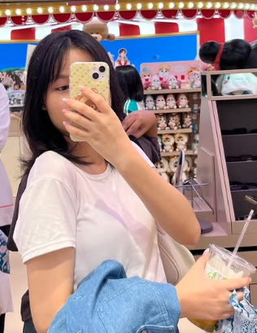

About Me
ทำความรู้จักกับฉัน ประวัติ และทักษะการทำงาน

เกี่ยวกับดิฉัน
สวัสดีค่ะดิฉันนางสาววรสา โชคประยูรเธียร
กำลังศึกษาอยู่ที่โรงเรียนบ้านบึง"อุตสาหกรรมนุเคราะห์"
คณะที่สนใจ คณะศิลปศาสตร์ สาขาภาษาจีนเพื่ออุตสาหกรรม เทคโนโลยีพระจอมเกล้าเจ้าคุณทหารลาดกระบัง
เกี่ยวกับดิฉัน
ภาษาจีนเป็นภาษาที่ฉันสนใจและชื่นชอบเป็นอย่างมาก ฉันคิดว่าภาษาที่ฉันกำลังเรียนอยู่ต้องสามารถนำไปต่อยอดได้แน่นอนในอนาคตตลอดช่วงมัธยมศึกษา
ฉันพยายามพัฒนาทักษะภาษาจีนของตนเองอยู่ตลอดเวลาสำหรับฉัน การได้เข้าศึกษาที่สถาบันเทคโนโลยีพระจอมเกล้าเจ้าคุณทหารลาดกระบังจะเป็นโอกาสสำคัญในการพัฒนาตนเองทั้งด้านภาษา
ความรู้ และทักษะที่จำเป็นต่อการทำงาน ฉันพร้อมที่จะเรียนรู้สิ่งใหม่ ๆ พัฒนาจุดที่ยังขาด และนำความสามารถที่มีไปต่อยอดให้เกิดประโยชน์
ทักษะทางเทคนิค (Skills)
• Speak chinese language